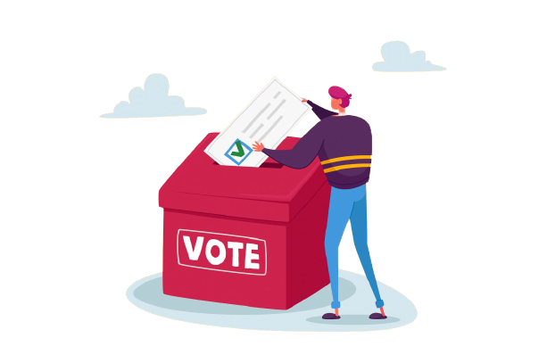

Elections
Organizational Election
-
Create secret ballots with high integrity
-
Create a ballot paper with one or more posts
-
Send notifications to voters via emails
-
Schedule results.

Conference Election
-
create polls.
-
Provide registration and real-time voting on agenda items during a meeting, conference, or class.
-
All votes are accessed from a central Meeting Page.